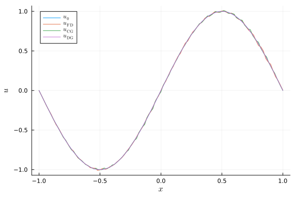

Linear advection equation with constant coefficients
This tutorial is concerned with the basic linear advection equation
\[\begin{aligned} \partial_t u(t,x) + \partial_x u(t,x) &= 0, && t \in (0,T), x \in (x_{min}, x_{max}), \\ u(0,x) &= u_0(x), && x \in (x_{min}, x_{max}), \\ u(t,x_{min}) &= u_L(t). \end{aligned}\]
Note that the advection velocity is positive (unity). Thus, a boundary condition needs to be specified exactly at the left boundary. Otherwise, the problem will not be well-posed (under-specified or over-specified).
Basic example using finite difference SBP operators
Let's create an appropriate discretization of this equation step by step. At first, we load packages that we will use in this example.
using SummationByPartsOperators, OrdinaryDiffEq
using LaTeXStrings; using Plots: Plots, plot, plot!, savefigNext, we specify the initial and boundary data as Julia functions as well as the spatial domain and the time span.
xmin, xmax = -1.0, 1.0
u0_func(x) = sinpi(x)
uL_func(t) = t >= 3 ? sinpi(t) : zero(t)
tspan = (0., 8.0)(0.0, 8.0)This choice of the domain and boundary condition ensures that the initial profile is transported out of the domain before non-homogeneous boundary data influences the solution.
Next, we implement the semidiscretization using the interface of OrdinaryDiffEq.jl which is part of DifferentialEquations.jl.
function rhs!(du, u, params, t)
D = params.D
# Set `du = - D * u` using in-place multiplication avoiding allocations
# for efficiency
mul!(du, D, u, -one(eltype(D)))
# Next, we impose the boundary conditions weakly using an SAT at the left
# boundary. Since we use the strong form of the equation, we do not need to
# do anything at the right boundary.
# Assuming that boundary nodes are included in the grid, adding this SAT
# can be achieved by
du[begin] += (uL_func(t) - u[begin]) / left_boundary_weight(D)
return nothing
endrhs! (generic function with 1 method)Here, we have used a simultaneous approximation term (SAT) to impose the boundary condition weakly. In general, this approach is related to the weak imposition of boundary conditions using numerical fluxes in finite volume and discontinuous Galerkin methods; they are even equivalent for the linear advection equation considered here.
Next, we choose an SBP operator D, evaluate the initial data on the grid, and set up the semidiscretization as an ODE problem.
D = derivative_operator(MattssonNordström2004(), derivative_order=1, accuracy_order=4,
xmin=xmin, xmax=xmax, N=101)
u0 = compute_coefficients(u0_func, D)
params = (D=D, )
ode = ODEProblem(rhs!, u0, tspan, params);ODEProblem with uType Vector{Float64} and tType Float64. In-place: true
timespan: (0.0, 8.0)
u0: 101-element Vector{Float64}:
-0.0
-0.06279051952931343
-0.12533323356430437
-0.1873813145857248
-0.24868988716485466
-0.30901699437494734
-0.3681245526846779
-0.42577929156507266
-0.4817536741017154
-0.5358267949789968
⋮
0.4817536741017154
0.42577929156507266
0.3681245526846779
0.30901699437494734
0.24868988716485466
0.1873813145857248
0.12533323356430437
0.06279051952931343
0.0Finally, we can solve the ODE using an explicit Runge-Kutta method with adaptive time stepping.
sol = solve(ode, Tsit5(), saveat=range(first(tspan), stop=last(tspan), length=200));
plot(xguide=L"x", yguide=L"u")
plot!(evaluate_coefficients(sol[1], D), label=L"u_0")
plot!(evaluate_coefficients(sol[end], D), label=L"u_\mathrm{numerical}")
savefig("example_linear_advection.png");"/home/runner/work/SummationByPartsOperators.jl/SummationByPartsOperators.jl/docs/build/tutorials/example_linear_advection.png"
Advanced visualization
Let's create an animation of the numerical solution.
using Printf; using Plots: Animation, frame, gif
let anim = Animation()
idx = 1
x, u = evaluate_coefficients(sol[idx], D)
fig = plot(x, u, xguide=L"x", yguide=L"u", xlim=extrema(x), ylim=(-1.05, 1.05),
label="", title=@sprintf("\$t = %6.2f \$", sol.t[idx]))
for idx in 1:length(sol.t)
fig[1] = x, sol.u[idx]
plot!(title=@sprintf("\$t = %6.2f \$", sol.t[idx]))
frame(anim)
end
gif(anim, "example_linear_advection.gif")
end
Continuous and discontinuous Galerkin methods
You can use a CG or DG method by swapping out the derivative operator D.
plot(xguide=L"x", yguide=L"u")
plot!(evaluate_coefficients(sol[1], D), label=L"u_0")
plot!(evaluate_coefficients(sol[end], D), label=L"u_\mathrm{FD}")
# CGSEM using polynomials of degree 3, i.e. 4 nodes per element, and 30 elements
D_CGSEM = couple_continuously(
legendre_derivative_operator(xmin=-1.0, xmax=1.0, N=4),
UniformMesh1D(xmin=xmin, xmax=xmax, Nx=30))
ode_CGSEM = ODEProblem(rhs!, compute_coefficients(u0_func, D_CGSEM), tspan, (D=D_CGSEM,))
sol_CGSEM = solve(ode_CGSEM, Tsit5(), save_everystep=false)
plot!(evaluate_coefficients(sol_CGSEM[end], D_CGSEM), label=L"u_\mathrm{CG}")
# DGSEM using polynomials of degree 3, i.e. 4 nodes per element, and 30 elements
# which are coupled using upwind fluxes
D_DGSEM = couple_discontinuously(
legendre_derivative_operator(xmin=-1.0, xmax=1.0, N=4),
UniformMesh1D(xmin=xmin, xmax=xmax, Nx=30),
Val(:minus))
ode_DGSEM = ODEProblem(rhs!, compute_coefficients(u0_func, D_DGSEM), tspan, (D=D_DGSEM,))
sol_DGSEM = solve(ode_DGSEM, Tsit5(), save_everystep=false)
plot!(evaluate_coefficients(sol_DGSEM[end], D_DGSEM), label=L"u_\mathrm{DG}")
savefig("example_linear_advection_Galerkin.png");"/home/runner/work/SummationByPartsOperators.jl/SummationByPartsOperators.jl/docs/build/tutorials/example_linear_advection_Galerkin.png"
Package versions
These results were obtained using the following versions.
using InteractiveUtils
versioninfo()
using Pkg
Pkg.status(["SummationByPartsOperators", "OrdinaryDiffEq"],
mode=PKGMODE_MANIFEST)Julia Version 1.6.7
Commit 3b76b25b64 (2022-07-19 15:11 UTC)
Platform Info:
OS: Linux (x86_64-pc-linux-gnu)
CPU: Intel(R) Xeon(R) Platinum 8171M CPU @ 2.60GHz
WORD_SIZE: 64
LIBM: libopenlibm
LLVM: libLLVM-11.0.1 (ORCJIT, skylake-avx512)
Environment:
JULIA_PKG_SERVER_REGISTRY_PREFERENCE = eager
Status `~/work/SummationByPartsOperators.jl/SummationByPartsOperators.jl/docs/Manifest.toml`
[1dea7af3] OrdinaryDiffEq v6.49.1
[9f78cca6] SummationByPartsOperators v0.5.30 `~/work/SummationByPartsOperators.jl/SummationByPartsOperators.jl`